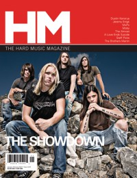

CMnexus
:
Contemporary Christian culture, music, and media.
Browse Magazines
Browse Profiles
cmnexus.org
CM
nexus
→
Profiles
→
S
→
Andrew Schwab
Andrew Schwab
Writing Credits: 1 of 2
< -- Previous
Next -- >
1
2
Writing credits listing
Mar 2005 in
Relevant
#13
"Mae in the Everglow of Anticipation"
Mae
The Mars Volta
-
Frances the Mute
Apr 2006 in
CCM
28.10
Thrice
-
Vheissu
May 2006 in
HM
#119
"As Seen Through The Eyes of Andrew Schwab..."
Project 86
Jun 2006 in
CCM
28.12
Listening In:
Anne Rice
Nov 2006 in
HM
#122
"Sane In The Membrane"
He Is Legend
Norma Jean
-
Redeemer

Jan 2007 in
HM
#123
"Wild-Eyed Southern Boys"
The Showdown
Copeland
-
Eat, Sleep, Repeat
MxPx
-
Let It Happen [Rerelease]
Mar 2007 in
HM
#124
"Steadfast Amidst The Pressure"
Haste the Day
Anberlin
-
Cities
Relient K
-
Five Score & Seven Years Ago
Mar 2007 in
Christian Music Planet
6.2
Relient K
-
Five Score & Seven Years Ago
May 2007 in
CCM
29.11
New Noise:
Paramore
New Noise:
Dustin Kensrue
New Noise:
Still Remains
New Noise:
Ruth
New Noise:
Eisley
New Noise:
Jeremy Enigk
New Noise:
The Tide
Jun 2007 in
CCM
29.12
New Noise:
Until June
New Noise:
Lovedrug
New Noise:
The Fray
New Noise:
The Chariot
New Noise:
Page France
Jul 2007 in
CCM
30.1
New Noise:
The Becoming
New Noise:
Ivoryline
New Noise:
The Devil Wears Prada
New Noise:
Ken Andrews
New Noise:
Play Radio Play
New Noise:
Neon Horse
New Noise:
Farewell Flight
Aug 2007 in
CCM
30.2
New Noise:
The Glorious Unseen
New Noise:
The Dear & Departed
New Noise:
Dashboard Confessional
New Noise:
As I Lay Dying
New Noise:
as cities burn
New Noise:
Northern
New Noise:
Widows & Orphans
Sep 2007 in
CCM
30.3
New Noise:
Children 18:3
New Noise:
Mainstay
New Noise:
Nodes of Ranvier
New Noise:
Demon Hunter
New Noise:
Pigeon John
New Noise:
Athlete
New Noise:
Oh, Sleeper
Oct 2007 in
CCM
30.4
New Noise:
Cry of the Afflicted
New Noise:
The Winston Jazz Routine
New Noise:
War of Ages
Writing Credits: 1 of 2
< -- Previous
Next -- >
1
2
CMnexus
(noun)
The magazine index
of modern music
and Christianity
© 2011 CMnexus. Last updated September 2019.
Contact:
Rants and other correspondence to:
editor -AT- cmnexus
-DØT- org
About